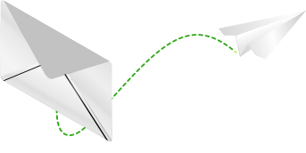

Our Services
Fire Door Inspection
We start by evaluating the doors current history, establishing the Golden Thread by the use of our bespoke data recording NFC tags. These are fixed to each door and uniquely identify each door and it’s fire protection properties.
Our Software
Using our bespoke software and our client portal, You will be able to access all your fire door inspection reports. Making monitoring of your doors and current repairs needed simple and efficient.
Testamonials
Property Managers Choose Us
Paul Lelliott
Property Manager
The fire door inspection service was thorough and professional. I feel much more confident about the safety of our building now."
Paul Lelliott
Property Manager
The fire door inspection service was thorough and professional. I feel much more confident about the safety of our building now."
Paul Lelliott
Property Manager
The fire door inspection service was thorough and professional. I feel much more confident about the safety of our building now."
Paul Lelliott
Property Manager
The fire door inspection service was thorough and professional. I feel much more confident about the safety of our building now."
We Create The Golden Thread
Our sights don't just stop at fire doors! Our aim within this year is to start rolling out extension modules that cover data capture, inspection and tagging of other passive fire products across a floorplate. The other products on our initial development list include:


No time to talk?
Request a Quote